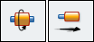
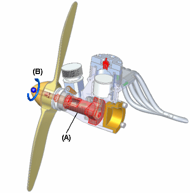

Rotational Motor and Linear Motor commands
You can use the Rotational Motor and Linear Motor commands

with the Simulate Motor command to display a kinematic simulation of the motion in an assembly.You use motor features to help you observe how a set of underconstrained parts will move relative to the part you define as a motor. This allows you to design and simulate complex mechanisms where the movement of a set of interrelated parts needs to be simulated. A Variable Table Motor is also available when you need to simulate angular or distance movement by incrementing the variable associated with an assembly relationship.
The Rotational Motor and Linear Motor commands are useful when working with assemblies that contain moving parts such as gears, pulleys, crankshafts, parts that travel in grooves or slots, and hydraulic or pneumatic actuators. For example, you can specify that a crankshaft part (A) in a mechanism rotates around an axis you specify (B).

You can then use the Motor Simulation command to play back a kinematic simulation of how the underconstrained parts in the assembly move.
Press F5 to replay the animation.

You can define properties for the motor, the motor rate or speed, motor direction, and any limits you may want to place on the motor.
When you define a motor feature using the either the Rotational Motor command, or the Linear Motor command, an entry is added for the Motors node in PathFinder. You can select the motor entry in PathFinder to edit the motor feature later.
Steps
The basic steps for defining a rotational motor or linear motor are:
-
Specify the motor command you want to use, Rotational Motor or Linear Motor.
-
Select the part you want to act as a motor.
-
Define the movement axis.
-
Specify the motor rate and limits.
Selecting the part
-
You can only select a part that is underconstrained, or has relationships suppressed. The assembly should also be underconstrained such that the mechanism is free to move in the proper axes.
Defining the movement axis
-
Depending on the motor command you specify, you can select faces, edges, or cylindrical axes to define the motor axis. For example, to define a rotary motor, you can select cylindrical faces, cylindrical edges, or cylindrical axes.
Specifying the motor rate and limits
-
The Motor Value and Limits options on the command bar allow you to specify the speed or rate at which you want the motor to operate, and any limits on the travel you want to impose. For example, you may want to specify that a rotational motor rotates at 1750 revolutions per minute, and makes two complete revolutions (720 degrees).
You can set the working units you want to use for the angular and linear velocity of a motor using the Advanced Units button on the Units tab of the File Properties dialog box.
Motor definition and simulation guidelines
You can define as many motors as you want in an assembly. When you define multiple motors in an assembly, use the Motor Group Properties dialog box, available with the Simulate Motor command and the Animation Editor tool to specify which motors you want to use, whether you want to detect collisions during the simulation, and so forth.
When working with more than one motor, use the Animation Editor tool to specify when the motors start time, duration time, and stop time for each motor. This allows you to design and simulate complex mechanisms where the timing and positioning of the parts is critical to understanding the behavior of the mechanism.
Only motors in the active assembly participate in a motor simulation. If you want subassembly parts to move in response to a motor simulation, you need to make the subassembly adjustable, using the Adjustable Assembly command on the PathFinder shortcut menu.
How do I
Create an animation using the Animation EditorDefine a Camera Path for an Assembly Animation
Create a motor
Simulate a Motor
Modify flow lines in an exploded assembly
Modify an animation
Delete an Animation
Add frames or time to an animation event
Remove frames or time from an animation event
Play back an animation
Save a movie
Display flow lines in an exploded assembly
Display flow line terminators in an exploded assembly
Use a Surface Dial with the Animation Editor
Learn more
Creating assembly animationsLook up more details
Animation Editor ToolCamera Path Wizard
Camera Path Wizard (Page 1)
Camera Path Wizard (Page 2)
Camera Path Wizard (Page 3)
Animation Editor command
Camera Path Wizard command
Simulate Motor command
Delete Animation command
Add Frames Command
Remove Frames Command
Save As Movie command
Add Frames Dialog Box
Animation Properties dialog box
Appearance command bar
Delete Animation Dialog Box
Duration Properties dialog box
Rotational Motor command bar
Linear Motor command bar
Motor Group Properties dialog box
Path command bar (Animation Editor Tool)
Remove Frames Dialog Box
Save As Movie dialog box
Save As Movie Options dialog box
Related Topics
Variable Table Motor commandVariable Table Motor workflow